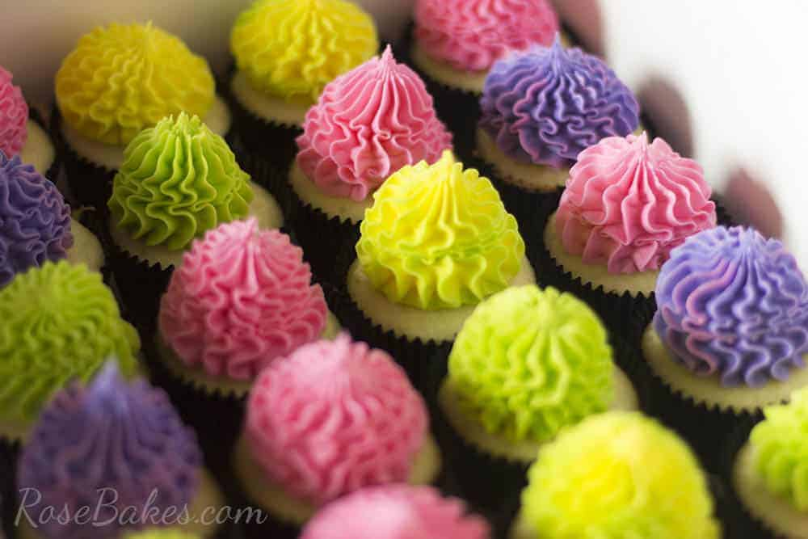

Cupcakes
Prep Time: 35 minutes
Yield: 12 units
Steps:
- Heat oven to 180C/160C fan/gas 4 and fill a 12 cupcake tray with cases.
- Using an electric whisk beat 110g softened butter and 110g golden caster sugar together until pale and fluffy then whisk in 2 large eggs, one at a time, scraping down the sides of the bowl after each addition.
- Add ½ tsp vanilla extract, 110g self-raising flour and a pinch of salt, whisk until just combined then spoon the mixture into the cupcake cases.
- Bake for 15 mins until golden brown and a skewer inserted into the middle of each cake comes out clean. Leave to cool completely on a wire rack.
- To make the buttercream, whisk 150g softened butter until super soft then add 300g icing sugar, 1 tsp vanilla extract and a pinch of salt.
- Whisk together until smooth (start off slowly to avoid an icing sugar cloud) then beat in 3 tbsp milk.
- If wanting to colour, stir in the food colouring now. Spoon or pipe onto the cooled cupcakes.
Reference: Sophie Godwin, "Cupcake recipe" , BBC Good Food, August 2008.